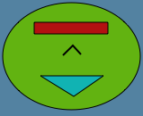

Lively Kernel Tutorial: (3) Composing Objects
Back to Introduction
PREVIOUS
Source code of this demo
NEXT
You can "glue" objects to each other to create composite objects.
For instance, the object below has been created by reshaping the
green ellipse, red rectangle and black line, and then dragging the
objects onto the green ellipse.

Notes:
- The entire composite object can be moved by grabbing the bottommost
object with the mouse.
- Parts can be removed from a composite object by grabbing the object
that you want to remove.
Try it yourself! Try to create the face-like image yourself.
Once you are done, try moving the entire composite object by grabbing
the green ellipse. After this, break the composite image apart by
moving its components away from the green ellipse.